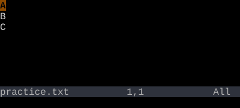

Numbered Registers
"0 = last yank. "1–"9 = the last nine deletes.
"0 holds your most recent yank; it never updates on delete. "1 holds your most recent multi-character delete; "2 the one before, and so on through "9. They shift on every delete.
Vim quietly keeps a backlog of your recent yanks and deletes. "0 is your most recent yank. "1 through "9 are the last nine deletes — they shift down on each new one.
Worked example — "1p and "2p
Walk back through deletion history.

"1-"9 hold the last 9 line-deletes. They shift each time you delete.
See also: Registers, The Unnamed Register, The Small Delete Register, Walking the Numbered Registers